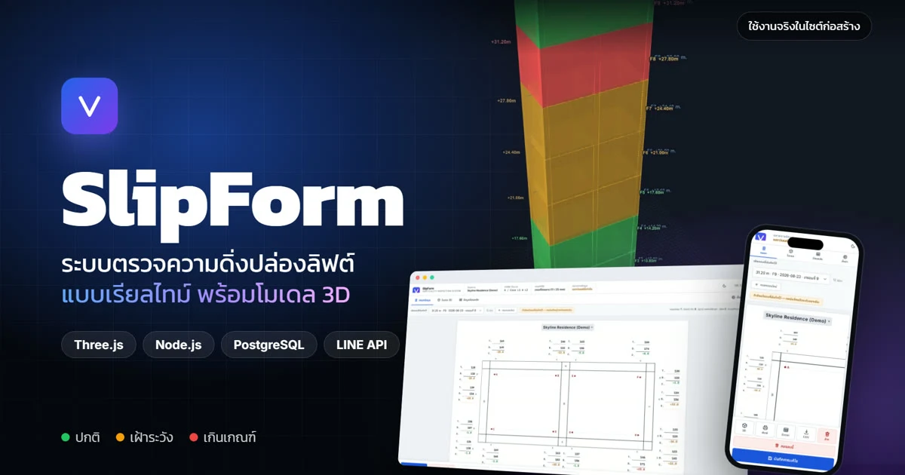

SlipForm
ระบบตรวจความดิ่งปล่องลิฟต์แบบเรียลไทม์ ช่วยทีมหน้างานบันทึกค่าวัด เห็นความคลาดเคลื่อนในโมเดล 3D และจัดการจุดที่ต้องแก้ไขได้ทันเวลา

ชมภาพรวมการทำงาน
วิดีโอความยาวประมาณ 1 นาที 22 วินาที แนะนำขั้นตอนการกรอกค่าวัด การประเมินผล การแสดงภาพ 3D และการแจ้งเตือนสำหรับทีมหน้างาน
จากกระดาษสู่ผลที่เห็นทันที
การจดค่าวัดลงกระดาษแล้วคีย์ซ้ำใน Excel ทำให้เสียเวลาและเพิ่มโอกาสผิดพลาด เมื่อค่าความดิ่งเริ่มเกินเกณฑ์ ทีมงานอาจทราบช้าเกินไป อีกทั้งการย้อนดูว่าใครแก้ไขค่าใดและมองแนวโน้มของปล่องทั้งต้นทำได้ยาก
ออกแบบให้ใช้ได้จริงในไซต์ก่อสร้าง
วางผังแบบฟอร์มให้คุ้นเคยกับเอกสารเดิม คำนวณค่าเบี่ยงเบนและแสดงระดับปกติ เฝ้าระวัง หรือเกินเกณฑ์ทันที โดยปรับเกณฑ์ตามโครงการได้
แสดงผลแต่ละชั้นด้วยสี ช่วยดูทิศทางความเอียงสะสม หมุน ซูม วัดระยะ และเปรียบเทียบผลการวัดต่างรอบ
ส่งสรุปเข้ากลุ่ม LINE เมื่อบันทึกผล และติดตามจุดที่เกินเกณฑ์จนมีผู้รับผิดชอบและปิดงาน
เรียกดูทุกรอบการวัด ส่งออก Excel หรือ CSV และเก็บประวัติการเปลี่ยนแปลงเพื่อให้ตรวจสอบได้
รับผิดชอบการพัฒนาทั้งระบบ
ผมเก็บความต้องการจากผู้ใช้หน้างาน ออกแบบ UI/UX และแบบจำลอง 3D เขียนส่วนหน้าเว็บและเซิร์ฟเวอร์ ออกแบบฐานข้อมูลและการควบคุมสิทธิ์ สร้างชุดทดสอบ จัดการการติดตั้งและส่งมอบระบบ รวมถึงนำเสนอผลงานต่อผู้เกี่ยวข้อง
ผลลัพธ์ที่เกิดขึ้น
ระบบถูกนำไปใช้ในไซต์ก่อสร้างจริงเพื่อแทนขั้นตอนจดกระดาษ ทีมงานรู้ผลหลังกรอกข้อมูล ตรวจประวัติการวัดและการแก้ไขย้อนหลังได้ และรับการแจ้งเตือนโดยไม่ต้องส่งต่อข้อมูลด้วยมือ